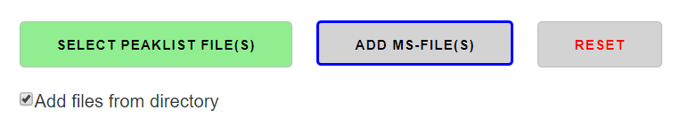

The MINT GUI
The app's frontend is build using Plotly-Dash and runs locally in a browser. Thought, the Python functions provided can be imported and used in any Python project independently. The GUI is under active development and might be changed in the future.

Select Peaklist File(s)
A user defined peaklist can be selected and used with the SELECT PEAKLIST FILE(S) button. Peaklists are explained in more detail here.

Add MS-files
Individual files can be added to an in worklist using the ADD FILE(S) button. If the checkbox Add files from directory is checked, all files from a directory and its subdirectories are imported that end on mzXML or mzML. The box is checked by default. Note that files are always added to the worklist. The worklist can be cleared with the RESET button.

Reset
Clicking the RESET button will delete current results and remove all selected files.
Run
The number of cores used for MINT can be selected with the Select number of cores slider. The maximum number shown here depends on the computer on which MINT is running. The RUN button starts mint and a progress bar monitors the progress and can be used to estimate the remaining time.

Export
Once generated Mint results can be exported by clicking on the EXPORT button. An Excel file is generated which is described in more detail here.

Interactive elements
Interative Results Table

Heatmap Tool